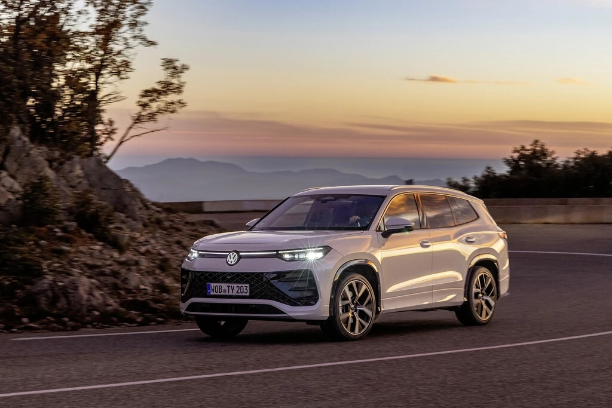
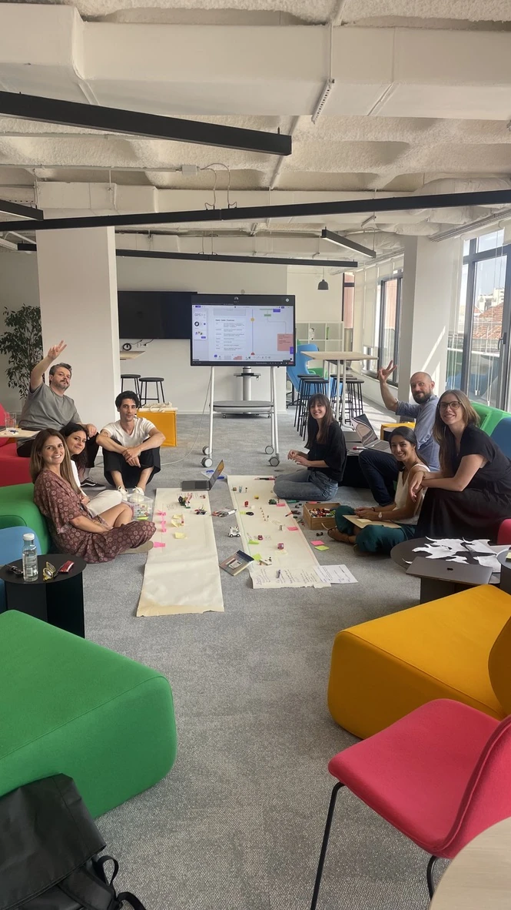
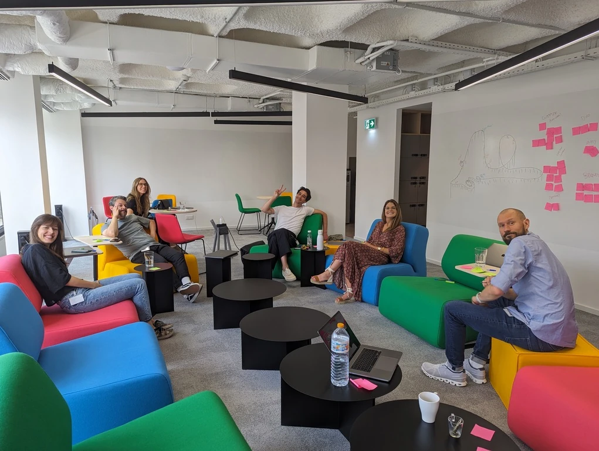

ONE.SHOP
Buying a car.
Connecting the details.
I designed the checkout UI for Volkswagen Group’s digital car-buying platform, connecting UX concepts, a shared design system and implementation.
Explore the thinking
- MY ROLE
- UI Designer
- TIMELINE
- 11 months
- TOOLS
- Figma · Frontify
- SECTOR
- Mobility · E-commerce
- THE TEAM
- 4 UX/UI D · 2 FE · 3 BE
1 PM · 1 QA
CONTEXT + AMBITION
One checkout.
Many moving parts.
A large-scale e-commerce platform that would let customers buy a car entirely online.
The Volkswagen Group project used a white-label approach, designed to adapt to four brands in the future. The checkout needed to sit coherently within a platform built by multiple teams.
My responsibility was the UI for the entire checkout, working alongside three UX designers and balancing their concepts with business and stakeholder requirements.
A coherent journey.
Across teams and brands.
MY ROLE + COLLABORATION
The work between
the screens.
I worked in a SAFe environment, taking part in the ceremonies and planning design tasks for each Program Increment.
The role reached beyond screen design: aligning with UX, coordinating components with the Design System Team, and supporting frontend developers and QA through implementation.
Align with UX.
Translate the checkout concepts into UI screens while integrating user, business and stakeholder requirements.
Work with the system.
Align with the Design System Team and request the components needed to keep the platform consistent.
Stay close to delivery.
Support frontend developers and QA so the intended experience carries through to implementation.
PROCESS + TEAMWORK
Shared thinking.
Closer collaboration.
Workshops made room to discuss ideas, refine the approach and align the team.
With most of the team based in Germany, in-person sessions in Lisbon brought everyone together around the work.


The screens were one part.
Alignment made them possible.
Figma
UI design and the shared screen work.
Miro
Presentations and discussions with clients.
Confluence
Documentation for the wider team.
Frontify
Working within the design-system environment.
OUTCOME + REFLECTION
From design
to delivery.
The project strengthened how I connect design decisions with business requirements, communicate with stakeholders and work across teams.
Design in context
Bring UX concepts, stakeholder needs and the design system together.
A connected handoff
Work alongside engineering and QA during implementation.
Communication as a design skill
Use presentations, documentation and workshops to keep teams aligned.
ONE CASE STUDY. PART OF A BIGGER PICTURE.